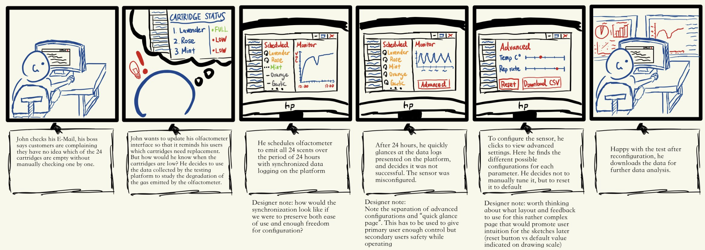
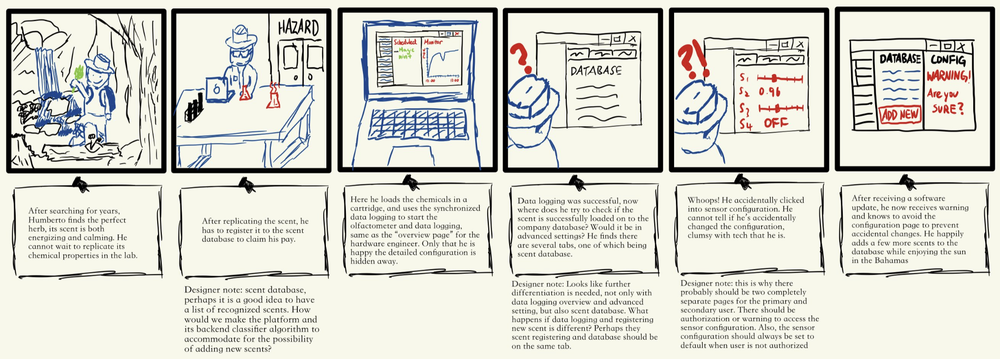

Project Background
OWidgets is a visionary company dedicated to revolutionizing sensory experiences through their groundbreaking innovations. At the forefront of their offerings is the Olfactometer, a cutting-edge device designed to emit scents with unparalleled precision and control. OWidgets' team of researchers, engineers, and multi-disciplinary scientists are committed to unlocking the full potential of the Olfactometer across a diverse array of applications, spanning research, healthcare, and immersive reality experiences.
Our collaborative project with OWidgets introduces an innovative olfactometer integrated with the BME680 sensor, enabling a breakthrough in olfactory sensing. The olfactometer, developed by OWidgets, emits diverse scents, while the BME680 sensor captures real-time data on temperature, humidity, pressure, and gas composition. Then, leveraging machine learning, we will facilitate precise scent identification. This novel system finds applications in fragrance design, healthcare, and environmental monitoring, promising advancements in quality control, early disease detection, and air quality assessment. By merging hardware and software expertise, our project showcases a transformative approach to olfactory analysis, opening new possibilities for industries and applications reliant on accurate scent identification.
Our collaborative project with OWidgets introduces an innovative olfactometer integrated with the BME680 sensor, enabling a breakthrough in olfactory sensing. The olfactometer, developed by OWidgets, emits diverse scents, while the BME680 sensor captures real-time data on temperature, humidity, pressure, and gas composition. Then, leveraging machine learning, we will facilitate precise scent identification. This novel system finds applications in fragrance design, healthcare, and environmental monitoring, promising advancements in quality control, early disease detection, and air quality assessment. By merging hardware and software expertise, our project showcases a transformative approach to olfactory analysis, opening new possibilities for industries and applications reliant on accurate scent identification.
Client Requirements
In collaboration with OWidgets, we organized a series of meetings to clarify project requirements and ensure alignment with their objectives. Establishing weekly meetings allowed for regular updates and continuous feedback, facilitating efficient progress tracking. These discussions helped us in developing our comprehensive MoSCoW list outlining the project's priorities. This systematic approach ensures that tasks are prioritized effectively, laying a solid foundation for successful project execution.
Here are a few of the client requirements:
Here are a few of the client requirements:
- Develop a user-friendly interface for the olfactometer
- Integrate the BME680 sensor with the olfactometer
- Implement machine learning algorithms for scent identification
- Facilitate real-time data capture and analysis
- Ensure seamless hardware and software integration
Project Goal
The goal of our project is to create a seamless and intuitive system that merges the capabilities of the olfactometer with the BME680 sensor, facilitating real-time scent identification through the application of machine learning techniques. Central to this endeavor is the development of a comprehensive scents database, enabling efficient storage and retrieval of scent data for analysis and reference. Additionally, the system will feature a user-friendly interface, providing control over the olfactometer and offering real-time visualization of data. To achieve optimal results, we will explore and experiment with various machine learning approaches, ensuring that the chosen methodology aligns with the project's objectives and maximizes the system's effectiveness.
User Interviews
Q: What is your background/experience?
Q: What is your role in the company? Please describe in detail. R&D on problems w electronics, hardware, etc. (How to control system & airflow, how to integrate bosche sensor into electronics, how to distribute odour from device better to allow user to detect it (currently using fluid simulations))
Q: Can you describe your experience with data analysis and machine learning?
Q: What are some immediate uses of the gas sensor calibration platform for the company? If so, can you further elaborate in detail on how this platform will impact your work?
Q: What kind of features of the platform will help you do your work easier?
- Worked with a startup company developing environmental sensors specifically for gas detection - optical sensing (optical absoption due to gas absorption) and detection using metal oxides.
- Then worked in a University on embedded systems and ML for 1.5 years before OW smell digital - sensor integration.
Q: What is your role in the company? Please describe in detail. R&D on problems w electronics, hardware, etc. (How to control system & airflow, how to integrate bosche sensor into electronics, how to distribute odour from device better to allow user to detect it (currently using fluid simulations))
Q: Can you describe your experience with data analysis and machine learning?
- Worked with ML in university, but not much experience with it in the industry.
- Review on techniques to do w sensors (e.g. feature extraction, pattern identification)
Q: What are some immediate uses of the gas sensor calibration platform for the company? If so, can you further elaborate in detail on how this platform will impact your work?
- Useful diagnostic tool for understanding what is coming out of system (odours can age over time, useful to understanding this process). Can help see if odour cartridge needs replacing or if characteristics are changing.
- Can be used to detect odours in background, apart from the one emitted from device - useful in places with a lot of background contamination.
- Sense what the user is detecting (e.g. place sensor at user's nose → keep track of what odour the user was sensing)
Q: What kind of features of the platform will help you do your work easier?
- Interface for configuring sensor (setting parameters like temperature ramp, timing, repetition rate for sampling).
- Extracting data from sensor.
- Controlling olfactometer (sync release of odour with sensor capturing) (scheduler).
-
Interface for recording data:
- Sensor Configuration.
- Button for turning on data collection + olfactometer.
- Could have file (csv) to give timings and activate olfactometer channels.
-
Second interface for processing data + training & gas identification (separate collection & analysis):
- Load data file into the system for training & identification.
- Tag training data to associate w different gases.
- System monitors sensor to estimate what gases are in environment w trained algorithm → display what gas it has identified + metrics of e.g. probability of that gas being in the environment.
Personas
After conducting interviews, we came up with personas and scenarios for our possible target users to better understand the specific requirements of our project.
Storyboard


MoSCoW List
Through all these discussions and interviews, we were able to develop a comprehensive MoSCoW list outlining the project's priorities. This systematic approach ensures that tasks are prioritized effectively, laying a solid foundation for successful project execution.
Must Have
- ML system to identify gas based on pattern of change in resistance across different temperatures.
- Interface for interacting with olfactometer and reading from sensor.
- Data-synthesis system which collects data to establish unique fingerprints for different scents through feature extraction pipeline.
Should Have
- Feature extraction through different wavelengths of gases recorded.
- Scents database to uniquely identify and store scents.
Could Have
- Support vector machines to identify gases.
- Instant gas identification.
- ML algorithm to recognise and identify wider variety of scents and in real time.
Won't Have
- Other applications such as establishing concentration of chemicals.
- Automate selection and evaluation of best heater profile for specific applications and more accurate identification.